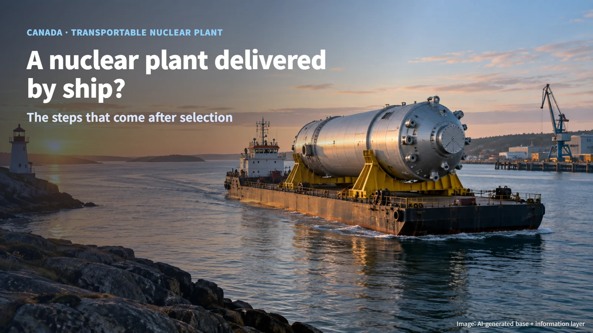
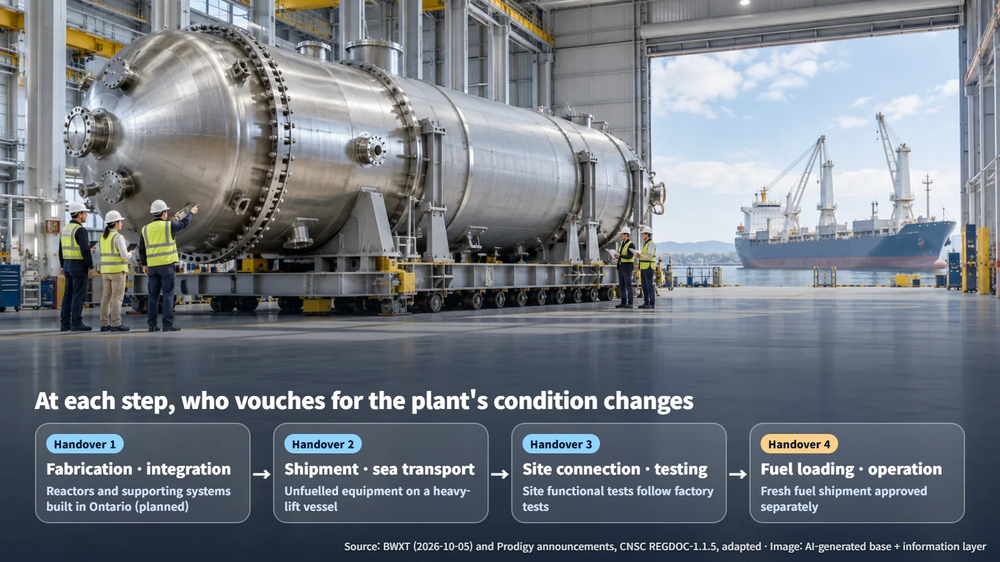
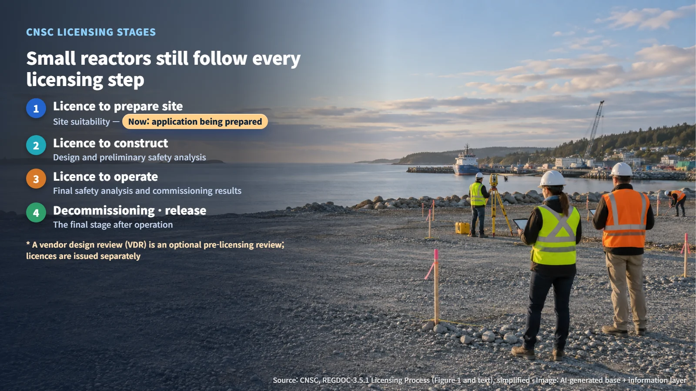
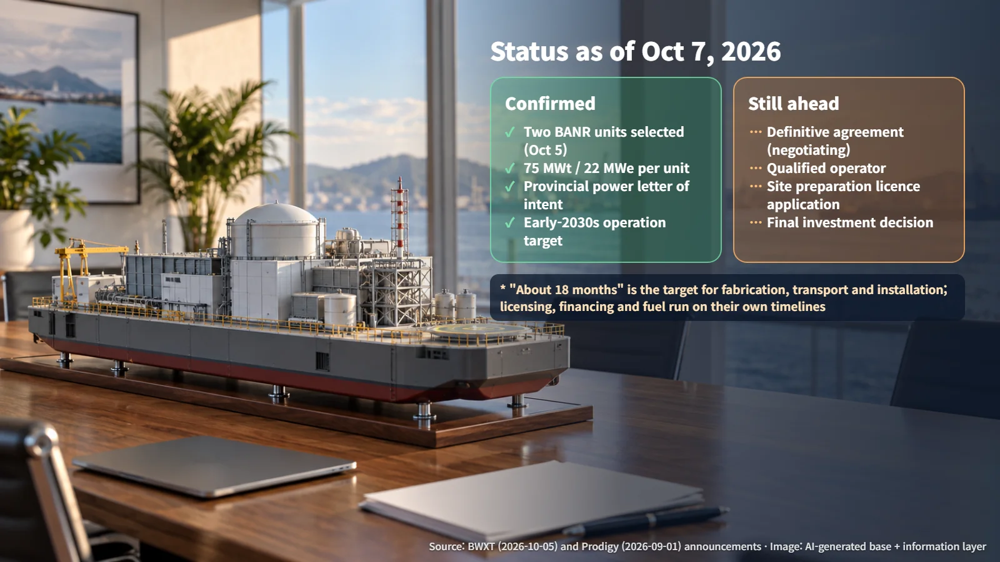

Canada · Transportable Nuclear Plant
A Nuclear Plant Delivered by Ship? The Steps Canada's Transportable Nuclear Plant Still Has to Clear
Two BWXT BANR reactors were selected for the Belledune project in New Brunswick; a definitive agreement, an operator and CNSC licences are the next steps.
Hearing that a nuclear plant will "arrive by ship" can bring to mind a reactor running out at sea. It is an unfamiliar idea, and it is natural to feel a little uneasy about it. On October 5, 2026, US-based BWX Technologies (BWXT) announced that two of its small BANR reactors had been selected for the Belledune project in New Brunswick, Canada. The project is being developed by Prodigy Clean Energy together with the Pabineau and Eel River Bar First Nations. Let us walk through what this news actually tells us, and what still lies between today and a plant that produces power.

What a "Transportable" Nuclear Plant Actually Is
The project is called a TNPP, short for Transportable Nuclear Power Plant. The key idea is this: the power plant equipment is carried as cargo on a heavy-lift vessel with no fuel inside, and fuel is loaded and the plant commissioned only after it reaches the site. The reactor stays unfuelled and shut down for the whole voyage; it generates electricity only once it is installed on land. It is also a different concept from the propulsion reactors that power ships.
A good way to picture it is a power plant that has yet to be switched on, riding on a ship. The reactor and its supporting systems are integrated onto Prodigy's prefabricated platform, and that whole assembly is moved as a single unit.
BANR is a high-temperature gas-cooled reactor (HTGR), a design that uses a gas such as helium to carry heat away from the core. It runs on HALEU (high-assay low-enriched uranium) in the form of TRISO particles. TRISO fuel wraps each tiny fuel kernel in three coating layers designed to hold fission products inside. Each unit is rated at 75 MWt (thermal output) or 22 MWe (electrical output). These safety features describe the design intent; for this project, they will be confirmed through the licensing review that still lies ahead.
Factory, Sea, Site: The Points Where Responsibility Changes Hands
BWXT plans to build the two reactors and their supporting systems at its facilities in Ontario, Canada. Building and testing in a factory reduces the amount of construction work needed at the site. Even after factory tests are passed, the equipment still goes through integrity checks after transport and functional testing at the site, because anything that may have shifted during the voyage has to be confirmed again on arrival.
Each time the equipment leaves the factory, boards the ship, comes ashore and is connected to site piping, the same question arises: who vouches for its condition at this moment? Fabrication and integration, shipment and transport, site connection and testing, and fuel loading and the move to operation are each a separate handover point. Public material so far shows the broad roles, with BWXT fabricating in Ontario and Prodigy providing the platform; the detailed contractual split of responsibilities has yet to be confirmed.

Fuel travels on its own track. The Canadian Nuclear Safety Commission's (CNSC) REGDOC-1.1.5 treats packaging and transport as a safety and control area within a licence application. Bringing in fresh fuel and shipping out spent fuel each need their own plans and approvals, separate from moving the plant equipment.
Small Reactors Still Follow Every Licensing Step
It is easy to expect a simpler process for a small reactor. The CNSC's graded approach works by matching the depth of the safety case to the risk, complexity and novelty of a project; every requirement still applies, with the level of evidence scaled to fit.
The vendor design review (VDR) is a frequent source of confusion. A VDR is an optional pre-licensing review that a vendor chooses to undergo, and the licence itself comes later through a separate process. Actual licensing follows REGDOC-3.5.1 through stages such as site preparation, construction, operation and decommissioning. Each stage calls for its own evidence: site suitability, then the design and preliminary safety analysis, then the final safety analysis and commissioning results.

The rule on outsourcing is equally clear. REGDOC-2.1.1 explains that even when work is contracted out, the licensee keeps full regulatory responsibility. Design and fabrication can be assigned to BWXT or Prodigy, while accountability to the regulator stays with the licence holder.
Between Selection and Contract: What Remains
As of October 7, what can be confirmed is the vendor selection and the development plan. A firm supply contract and an operating track record are still to come. BWXT and Prodigy are negotiating a definitive agreement, and a qualified operating organization that will hold the facility licence is still to be procured. The project announcements include a plan to prepare an application for a licence to prepare site.

The numbers are best read in context. The 44 MWe figure for the two units is a simple sum. The roughly 18 months is the target for fabrication, transport and installation; licensing, financing and fuel supply run on their own timelines on top of that. The province's letter of intent to purchase power is an early commitment, with a firm power purchase agreement and licences still to follow. The developers are aiming for operation in the early 2030s, and at the time of the September 1 announcement they targeted a final investment decision (FID) within 18 months.
A nuclear plant delivered by ship is a plant built in a factory, carried to its site, and then verified step by step once it arrives. The next time similar news appears, it is worth separating "selected" from "contracted" and "target" from "licensed." The milestones to watch now are the definitive agreement and the application for a licence to prepare site.